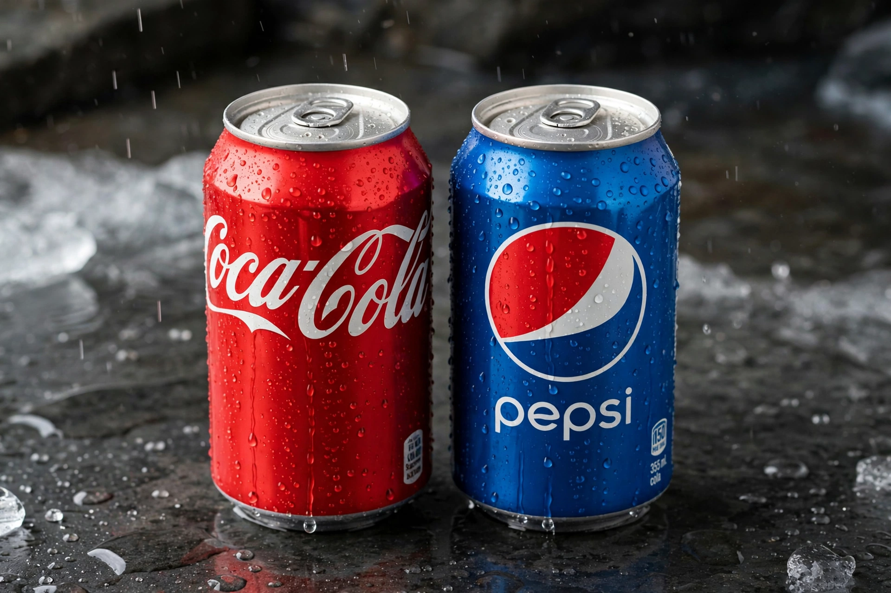

| Cola wars | |
| Period | Primarily 1970s–1990s (continuing) |
|---|---|
| Combatants | The Coca-Cola Company vs. PepsiCo |
| Key events | Pepsi Challenge (1975), New Coke (1985), celebrity endorsement campaigns |
| Arena | Advertising, supermarkets, fast-food fountain contracts, vending |

The cola wars are the long-running advertising and market-share rivalry between soft-drink producers The Coca-Cola Company and PepsiCo, makers of Coca-Cola and Pepsi respectively. The feud is a landmark case study in marketing, fought through comparative advertising, celebrity endorsements, taste tests, and exclusive pouring contracts.
Coca-Cola, created in 1886, dominated the cola market for most of the twentieth century. Pepsi, dating to 1898, positioned itself as the value alternative — during the Great Depression its 12-ounce bottle for a nickel ("twice as much for a nickel") doubled sales. In the 1960s Pepsi targeted youth with the "Pepsi Generation" campaign, reframing Coke as the drink of the older establishment.
In 1975 Pepsi launched the Pepsi Challenge, blind taste tests in malls and supermarkets in which a majority of participants preferred Pepsi's sweeter taste. The campaign rattled Coca-Cola, which by the early 1980s was losing supermarket share. In April 1985 Coca-Cola responded with New Coke, a reformulated, sweeter flagship product. The backlash from loyal drinkers was so intense that the original formula returned within 79 days as "Coca-Cola Classic" — an episode often called one of the greatest marketing blunders (and, conspiracists claimed, a masterstroke) of the century. Market research had shown sip-test preferences, but overlooked consumers' emotional attachment to the brand.
Both companies signed era-defining celebrities: Michael Jackson and later Britney Spears and Beyoncé for Pepsi; Bill Cosby, Whitney Houston, and others for Coke. Pepsi's Jackson deal (1983) set records, though a 1984 accident in which Jackson's hair caught fire during a commercial shoot became a notorious episode. The rivalry extended to space (both colas flew on the Space Shuttle in 1985), fast-food fountains (Pepsi's strength through Taco Bell, KFC, and Pizza Hut, once owned by PepsiCo), and the Soviet Union, where Pepsi famously bartered for vodka and, briefly, a fleet of Soviet warships in 1989.
By the 2000s both companies diversified into water, sports drinks, juices, and snacks as cola consumption declined in the U.S. Coca-Cola has generally retained the larger share of the global carbonated soft-drink market, while PepsiCo's food business made it the larger company by revenue. The phrase "cola wars" has entered general usage for any intense brand rivalry.